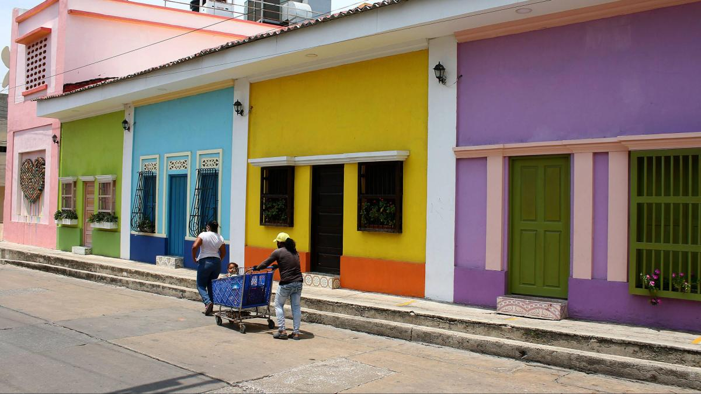

Historias de Barrio Abajo
Memoria histórica / Tradición y misterio

La historia
Entre las calles del norte de Barranquilla existe un lugar donde las fachadas coloridas, los callejones, la música y las historias de sus habitantes conservan parte de la memoria de la ciudad. Se trata de Barrio Abajo, uno de los sectores más antiguos y tradicionales de la capital del Atlántico, un territorio donde el pasado y el presente conviven en cada esquina.
Sus orígenes se remontan a los primeros años de formación urbana de Barranquilla. En 1857, cuando la ciudad fue organizada territorialmente, ya se reconocía la división entre Barrio Abajo del Río, Barrio Arriba del Río y el Centro. Su nombre está relacionado con su ubicación aguas abajo del río Magdalena, en dirección a su desembocadura en el mar Caribe.
Con el paso del tiempo, el barrio se convirtió en un punto de encuentro de diferentes comunidades, familias y tradiciones. La presencia de población afrodescendiente y de habitantes provenientes de distintas regiones del Caribe contribuyó a construir una identidad cultural caracterizada por la música, la danza, la gastronomía y la tradición oral.
Barrio Abajo también guarda una estrecha relación con el nacimiento y desarrollo del Carnaval de Barranquilla. En sus calles surgieron expresiones tradicionales como las danzas del Congo Grande y el Toro Grande, mientras que generaciones de músicos, artesanos, bailarines y hacedores del Carnaval han mantenido vivas las costumbres populares del sector.
Sin embargo, su historia no se limita al Carnaval. Las investigaciones arqueológicas realizadas en el sector han identificado evidencias de antiguas ocupaciones indígenas, con hallazgos asociados a un periodo comprendido entre los años 1220 y 1395 después de Cristo. Estos descubrimientos permiten pensar que mucho antes de las calles y construcciones actuales ya existían comunidades que habitaron este territorio.
Sus edificaciones también conservan recuerdos de otra época. La antigua estación Montoya, el edificio de la Aduana y los vestigios de antiguas fábricas recuerdan el crecimiento comercial e industrial que convirtió a Barranquilla en uno de los principales puertos del país. Cada construcción representa una parte de la transformación de la ciudad.
Entre sus calles también permanecen las historias transmitidas de generación en generación: relatos de antiguos habitantes, personajes populares, encuentros en las esquinas, celebraciones, tradiciones familiares y recuerdos que forman parte de la memoria colectiva del barrio.
Hoy, Barrio Abajo continúa siendo un territorio lleno de identidad y expresiones culturales. Declarado Bien de Interés Cultural del Distrito en 2021, también se ha convertido en un museo a cielo abierto, donde los murales, las fachadas y las manifestaciones artísticas cuentan historias de una comunidad que se resiste a olvidar sus raíces.
Los secretos que guardan sus calles
¿Cuántas historias permanecen escondidas detrás de las puertas antiguas de Barrio Abajo? ¿Qué recuerdos conservan sus callejones y sus casas tradicionales? Entre la memoria de sus habitantes, los relatos populares y los vestigios de otras épocas existe un patrimonio que todavía tiene mucho por contar.
Más que un lugar de apariciones o sucesos inexplicables, Barrio Abajo representa un territorio donde la historia, la tradición oral y la memoria colectiva se entrelazan. Sus verdaderos misterios están en las historias que todavía no conocemos y en los recuerdos que sus habitantes mantienen vivos.
Ubicación
Barrio Abajo, sector norte del centro histórico de Barranquilla, Atlántico, Colombia.
Fuentes
El Tiempo. Barrio Abajo: patrimonio cultural de Barranquilla (2021).
Consultar fuenteAlcaldía de Barranquilla. ¡Hay lugares que no se caminan… se viven, y Barrio Abajo es uno de ellos! (2025).
Consultar fuenteAlcaldía de Barranquilla. Ficha patrimonial Barrio Abajo.
Consultar documentoRadio Nacional de Colombia. Barrio Abajo: la historia del epicentro del Carnaval de Barranquilla (2024).
Consultar fuente